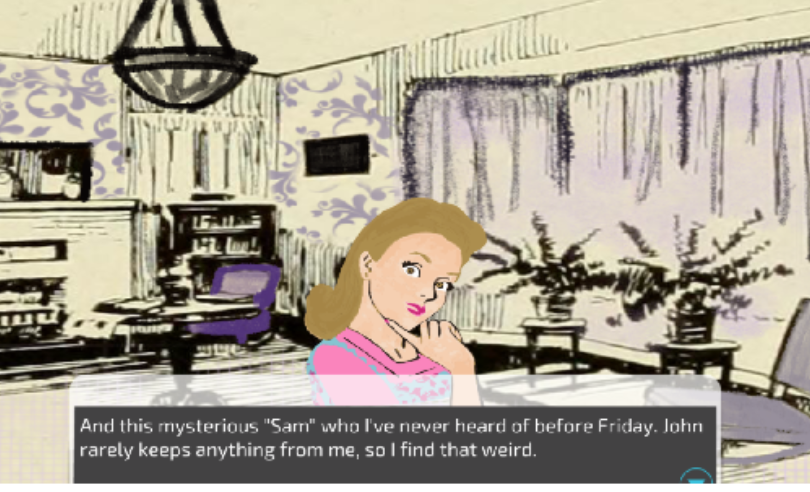

Blog post 6

A Smoking Gun: A Charles Valentine Detective Story By Jack Fogerson and Monica Munoz
Game Credits: My partner added licensed music and some images
Description: As a detective in the town of Portland, Maine in 1920, you must solve the disappearance of a local man. Travel through the town, interview suspects, and find clues in order to uncover the mystery...
As of the current state, we got a lot of nice feedback from the players on the discussion board. We definitely added more structured parts in it such as change of scenery(locations). The audio suggestion from the first playtime was considerate and also enhanced since then. Also, the game runs more smoothly and has no lagging. I think that having other people play the game was extremely helpful to change and add parts. Since my partner and I will work on the game for the final, we will try to put much more time and develop the storyline further and more interesting. For example, We want to incorporate more art such as different emotions for certain characters and fix the minor details.
To play the game, the player navigates through the game selecting different choices in order to advance in the game and solve the mystery. The game controls are simply using the space bar or mouse to select an option.There are also moments in which some items can be selected for extra clues.